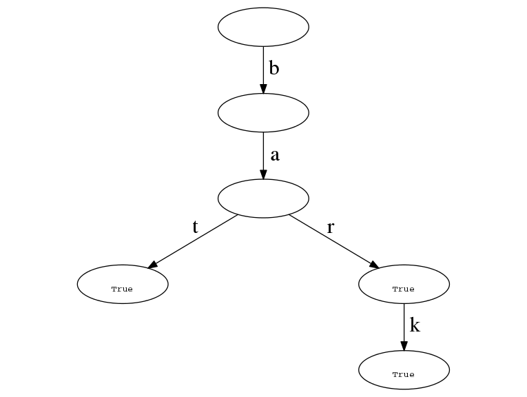

Lab 6: Autocomplete
If you are a current student, please Log In for full access to the web site.
Note that this link will take you to an external site (https://oidc.mit.edu) to authenticate, and then you will be redirected back to this page.
Table of Contents
- 1) Preparation
- 2) Introduction
- 3) Trie class and basic methods
- 4) Autocomplete
- 5) Autocorrect
- 6) Selecting words from a word trie
- 7) Testing your lab
- 8) Code Submission
- 9) Checkoff
1) Preparation
This lab assumes you have Python 3.5 or later installed on your machine.
The following file contains code and other resources as a starting point for this lab: lab6.zip
Most of your changes should be made to lab.py, which you will submit
at the end of this lab. Importantly, you should not add any imports
to the file. You may submit portions of the lab late (see the
grading page for more details), but the last day to
submit this lab will be the Friday after the due date.
This lab is worth a total of 4 points. Your score for the lab is based on:
- correctly answering the questions on thie page (0.5 points)
- passing the test cases from
test.pyunder the time limit (1.5 points), and - a brief "checkoff" conversation with a staff member to discuss your code (2 points).
For this lab, you will only receive credit for a test case if it runs to completion under the time limit on the server.
Please also review the collaboration policy before continuing.
2) Introduction
Type "aren't you" into a search engine and you'll get a handful of search suggestions, ranging from "aren't you clever?" to "aren't you a little short for a stormtrooper?". If you've ever done a web search, you've probably seen an autocompletion — a handy list of words that pops up under your search, guessing at what you were about to type.
Search engines aren't the only place you'll find this mechanism. Cell phone use autocomplete/autocorrect to predict/correct words that are entered for, for example, text messages. Some IDEs (integrated development environments - used for coding / software development) use autocomplete to make the process of coding more efficient by offering suggestions for completing long function or variable names.
In this lab, we are going to implement our own version of an autocomplete/autocorrect engine using a tree structure called a trie, as described in this document.
The lab will ask you first to create a class to represent a generic trie data structure. You will then use the trie to write your own autocomplete and autocorrect, as well as a mechanism for searching.
2.1) The Trie Data Structure
A trie1, also known as a prefix tree, is a type of search tree that stores an associative array (a mapping from keys to values). In a trie, the keys are always ordered sequences. The trie stores keys organized by their prefixes (their first characters), with longer prefixes given by successive levels of the trie. Each node optionally contains a value to be associated with that node's prefix.
As an example, consider a trie constructed as follows:
t = Trie()
t['bat'] = True
t['bar'] = True
t['bark'] = True
This trie would would look like the following:

One important thing to notice is that the keys associated with each node are not actually stored in the nodes themselves. Rather, they are stored in the edges connecting the nodes.
We'll start by implementing a class called Trie to represent tries in Python.
This class will include facilities for adding, deleting, modifying, and
iterating over key/value pairs. For example, consider:
>>> t = Trie()
>>> t['bat'] = True
>>> t['bar'] = True
>>> t['bark'] = True
>>>
>>> t['bat']
True
>>> t['something']
Traceback (most recent call last):
...
KeyError
>>>
>>> t['bark'] = 20
>>> t['bark']
20
>>>
>>> for i in t:
print(i)
('bat', True)
('bar', True)
('bark', 20)
>>>
>>> del t['bar']
>>>
>>> for i in t:
print(i)
('bat', True)
('bark', 20)
However, we are not limited to using only strings. Your Trie structure
should (eventually) also support using tuples as keys, for example:
>>> t = Trie()
>>> t[2, ] = 'cat'
>>> t[1, 0, 0] = 'dog'
>>> t[1, 0, 1] = 'ferret'
>>> t[1, 0, 1, 80] = 'tomato'
>>>
>>> t[1, 0]
Traceback (most recent call last):
...
KeyError
>>> t[1, 0, 0]
'dog'
>>> for i in t:
print(i)
((2,), 'cat')
((1, 0, 0), 'dog')
((1, 0, 1), 'ferret')
((1, 0, 1, 80), 'tomato')
Note that, in terms of interface and functionality, the Trie class will have
a lot in common with a Python dictionary. However, the representation we're
using "under the hood" has some nice features that make it well-suited for
tasks (like autocompletion) that use prefix-based lookups.
3) Trie class and basic methods
In lab.py, you are responsible for implementing the Trie class, which
should support the following methods.
Hint: you may wish to make sure everything is working for only str keys
first, and then expand to make things work for keys that are tuples, rather
than trying to implement both right from the start.
__init__( self )
value, the value associated with the sequence ending at this node. Initial value isNone(we will assume that a value ofNonemeans that a given key has no value associated with it, not that the valueNoneis associated with it).children, a dictionary mapping single-element sequences (either length-1 strings, or length-1 tuples) to another trie node, i.e., the next level of the trie hierarchy (tries are a recursive data structure). Initial value is an empty dictionary.type, some way to keep track of the type of the keys (without explicitly storing the entire keys themselves). The exact choice of representation is up to you. This attribute should be set toNonewhen the instance is first created, and it should be updated to reflect the type of the keys when the first element is added. You may assume that all keys in a givenTrieinstance are of the same type.
__setitem__( self, key, value )
key to the trie, associating it with the given value. For
the trie node that marks the end of the key, set that node's value attribute
to be given value argument. This method doesn't return a value. This is a
special method name used by Python to implement subscript assignment. For
example, x[k] = v is translated by Python into x.__setitem__(k, v). If the
type of the key is not consistent with the key type expected for the trie, a
TypeError exception should be raised (see https://docs.python.org/3/reference/simple_stmts.html#raise).
Examples (using the trie structure from the picture above):
t = Trie()would create the root node of the example trie above.t["bat"] = Trueadds three nodes (representing the'b','ba', and'bat'prefixes), and associates the valueTruewith the node corresponding to'bat'.t["bark"] = Trueadds two new nodes for prefixes'bar'and'bark'shown on the bottom right of the trie, setting the value of the last node toTrue.t['bar'] = Truedoesn't add any nodes and only sets the value of the first node added above when inserting "bark" toTrue.-
t[1] = Trueraises aTypeErrorand does not make any change to the trie.
__getitem__( self, key )
x[k] is
translated by Python into x.__getitem__(k). It is expected that the trie node
descended from the self trie will be located corresponding to key and the value associated with
that node will be returned, or a KeyError will be raised if the key cannot be found in the
trie. If the type of the key is not consistent with the expected type of keys for
this trie, raise a TypeError.
Examples (using the example trie from above):
t["bar"]should returnTrue.t['apple']should raise aKeyErrorsince the given key does not exist in the trie.t['ba']should also raise aKeyErrorsince, even though the key'ba'is represented in the trie, it has no value associated with it.-
t[1]should raise aTypeErrorsince the keys for this trie are expected to be strings, not integers.
__delitem__( self, key )
del x[k] is
translated by Python into x.__delitem__(k).
Examples (using the example trie from above):
del t["bar"]should disassociate"bar"from its value in the trie, so that subsequent lookups oft["bar"]produce aKeyError.
__contains__( self, key )
True if key occurs has a value other than None in the
trie. This is the special method name used by Python to implement the
in operator. For example,
k in xis translated to
x.__contains__(k)Hint: At first glance, the code for this method might look very similar to some of the other methods above. Make good use of helper functions to avoid repetitious code! Examples (using the example trie from above):
"ba" in treturnsFalsesince that interior node has no value associated with it."bar" in treturnsTrue(not because the value associated with'bar'isTrue, but because'bar'has a value associated with it at all."barking" in treturnsFalsesince"barking"can't be found in trie.
__iter__( self )
(key, value) tuples for each
key stored in the trie. The pairs can be produced in any order.
iter is the special method name used by Python when it needs to
iterate over a data object, i.e., the method invoked by the
iter() built-in function. For example, the following Python
code will print all the keys in a trie:
for key, val in t:
print(key)
Hint: You'll want to return a recursive generator
function that uses yield and yield from to produce
the required sequence of values one at a time. See https://docs.python.org/3/howto/functional.html#generators and/or https://docs.python.org/3/whatsnew/3.3.html#pep-380.
Examples (using the example trie from above):
list(t)returns[('bat', True), ('bar', True), ('bark', True)]. Note that thelistfunction has an internalforloop that usesiter(t)to iterate over each element of the sequencet.
4) Autocomplete
Now, let's implement our auto-complete engine!
We'll start with implementing a autocompletion for words, and then we'll move
to implementing autocompletion for sentences. As a start for either of these,
we'll need a way to build up a Trie instance from a text document.
make_word_trie(text)
text is a string containing a body of text. Return a Trie instance mapping
words in the text to the frequency with which they occur in the given piece
of text.
Note that we have provided a method called tokenize_sentences which will try
to intelligently split a piece of text into individual sentences. You should use
this function rather than implementing your own. The function takes in a single
string and returns a list of strings, one for each sentence, where punctuation has been
stripped out and the sentence consists only of words. Words within
those sentences are sequences of characters separated by spaces.
make_phrase_trie(text)
text is a string containing a body of text. Return a Trie instance mapping
sentences (represented as tuples of words) to the frequency with which they
occur in the given piece of text.
As a running example, we'll use the following trie, which could have been
created by calling make_word_trie("bat bat bark bar"):
Once we have those trie representations, we are ready to go ahead and implement autocompletion! We'll implement autocompletion as a function described below:
autocomplete( trie, prefix, max_count=None )
trie is an instance of Trie, prefix is a string, max_count is an
integer or None. Return a list of the max_count
most-frequently-occurring keys that start with prefix. In the case of a
tie, you may output any of the most-frequently-occurring words. If there are
fewer than max_count valid words available starting with prefix, return
only as many as there are. The returned list may be in any order. If
max_count is not specified, your list should contain all values that start
with prefix.
Return [] if prefix is not in the trie.
Examples (using the example trie from above):
autocomplete(t, "ba", 1)returns['bat'].autocomplete(t, "ba", 2)might return either['bat', 'bark']or['bat', 'bar']since "bark" and "bar" occur with equal frequency.autocomplete(t, "be", 1)returns[].
Your implementation should be agnostic to the type of its inputs (i.e., it should work both on tries/prefixes that are either strings or tuples). Write a few small tests of your own to test this behavior.
5) Autocorrect
You may have noticed that for some words, our autocomplete implementation generates very few or no suggestions. In cases such as these, we may want to guess that the user mistyped something in the original word. We ask you to implement a more sophisticated tool: autocorrect.
In this case, we will only concern ourselves with tries that are made up of words (i.e., we won't concern ourselves with tuples in this case).
autocorrect( trie, prefix, max_count=None )
trie is an instance of Trie whose keys are strings, prefix is a string,
max_count is an integer or None; returns a list of up to max_count words.
autocorrect should invoke autocomplete, but if fewer than max_count
completions are made, suggest additional words by applying one valid
edit to the prefix. An edit for a word can be any one of the
following: - A single-character insertion (add any one character in the range "a" to "z" at any place in the word)
- A single-character deletion (remove any one character from the word)
- A single-character replacement (replace any one character in the word with a character in the range a-z)
- A two-character transpose (switch the positions of any two adjacent characters in the word)
edit in self is True.
For example, editing "te" to "the" is valid, but
editing "te" to "tze" is not, as "tze" isn't a
word. Likewise, editing "phe" to "the" is valid, but
"phe" to "pho" is not because "pho" is not a word in
the corpus, although many words beginning with "pho" are.
In summary, given a prefix that produces completions, where < max_count,
generate up to max_count - additional words by considering all valid single
edits of that prefix (i.e., corpus words that can be generated by 1
edit of the original prefix), and selecting the
most-frequently-occurring edited words. Return a list of suggestions
produced by including all of the completions and up to max_count - of
the most-frequently-occuring valid edits of the prefix; the list may
be in any order. Be careful not to repeat suggested words!
If max_count is None (or is unspecified), autocorrect should return all
autocompletions as well as all valid edits.
Example (using the example trie from above):
autocorrect(t, "bar", 3)returns['bar', 'bark', 'bat']since "bar" and "bark" are found by autocomplete and "bat" is valid edit involving a single-character replacement, i.e., "t" is replacing the "r" in "bar".
6) Selecting words from a word trie
It's sometimes useful to select only the words from a trie that match
a pattern. That's the purpose of the filter method.
word_filter( trie, pattern )
trie is a trie whose keys are strings, and pattern is a string. Return a
list of (word, freq) tuples for those words whose characters match those of
pattern. The characters in pattern are matched one at a time with the
characters in each word stored in the trie. If all the characters in a
particular word are matched, the (word, freq) pair should be included in the
list to be returned. The list can be in any order.
The characters in pattern are interpreted as follows:
'*'matches a sequence of zero or more of the next unmatched characters inword.'?'matches the next unmatched character inwordno matter what it is. There must be a next unmatched character for'?'to match.- otherwise the character in the pattern must exactly match the next unmatched character in the word.
"*a*t"matches all words that contain an "a" and end in "t". This would include words like "at", "art", "saint", and "what"."year*"would match both "year" and "years""*ing"matches all words ending in "ing""???"would match all 3-letter words"?ing"matches all 4-letter words ending in "ing""?*ing"matches all words with 4 or more letters that end in "ing"
word_filter(t, "*")returns[('bat', 2), ('bar', 1), ('bark', 1)], i.e., listing all the words in the trie.word_filter(t, "???")returns[('bat', 2), ('bar', 1)], i.e., listing all the 3-letter words in the trie.word_filter(t, "*r*")returns[('bar', 1), ('bark', 1)], i.e., listing all the words containing an "r" in any position.
regex module — you are expected
to write your own pattern-matching code. Copying code from
StackOverflow is also not appropriate.
7) Testing your lab
As in the previous labs, we provide you with a test.py script to help you
verify the correctness of your code. In addition to the test cases for this
week's lab, we'll have you test out your code by running it on several examples
of real public domain books (courtesy of Project
Gutenberg).
Download the following text files (each of which contains a whole book) to the
same directory as your lab.py:
- Pride and Prejudice by Jane Austen
- Alice's Adventures in Wonderland by Lewis Carroll
- Dracula by Bram Stoker
- A Tale of Two Cities by Charles Dickens
- Metamorphosis by Franz Kafka
You can load the text of any of these files using something like the following code:
with open("filename.txt", encoding="utf-8") as f:
text = f.read()
After running this code, the variable text will be bound to a string
containing the text contained in the filename.txt file.
We'll read the contents of these files into Python, use our make_word_trie
and make_phrase_trie functions to create the relevant trie structures, and
use our autocompletion/autocorrection based on those corpora. Use these tools
to answer the following questions and be prepared to discuss how you used
your Trie structure to answer these questions during the checkoff.

gre? Enter your answer as a Python list of
strings:
c*h, along with their counts?
Enter your answer as a Python list of
tuples, of the same form as your output from word_filter:
r?c*t, along with their counts?
Enter your answer as a Python list of
tuples, of the same form as your output from word_filter:
'hear' in Alice in Wonderland?
Enter your answer as a Python list of
strings:
'hear' in Pride and Prejudice?
Enter your answer as a Python list of strings:
8) Code Submission
9) Checkoff
Once you are finished with the code, please come to a tutorial, lab session, or office hour and add yourself to the queue asking for a checkoff. You must be ready to discuss your code and test cases in detail before asking for a checkoff.
You should be prepared to demonstrate your code (which should be well-commented, should avoid repetition, and should make good use of helper functions). In particular, be prepared to discuss:
- how you were able to keep track of the prefix associated with each node without explicitly storing the prefix itself
- the tradeoff between using iteration and recursion when implementing the
__getitem__method. - how you created a generator when implementing the
__iter__method. Did you useyield from? - how using your other methods would make implementing
autocompleteeasy. - how your code for creating edits works.
- how your recursive matching works (without enumerating all words) for the
filterimplementation. - how you used your
Triestructure to answer the questions at the bottom of the page.
9.1) Grade
Footnotes
1 Different people have different opinions about whether this data structure's name should be pronounced like "tree" or like "try". It originally comes from the middle syllable of the word "retrieval," which suggests one pronunciation, but some prefer to say it like "try" to avoid confusion with general "tree" structures in programming. Some even say "tree as in try," but that's kind of a mouthful...